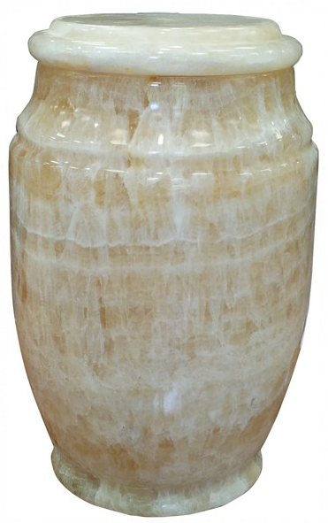
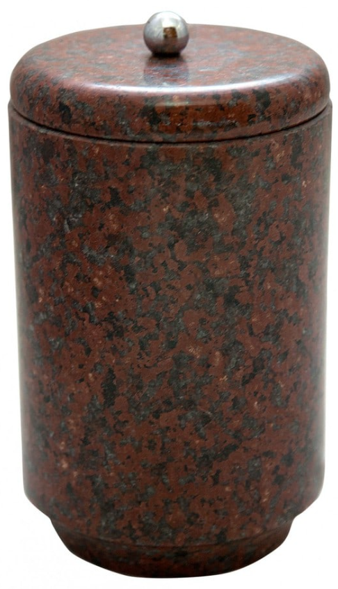
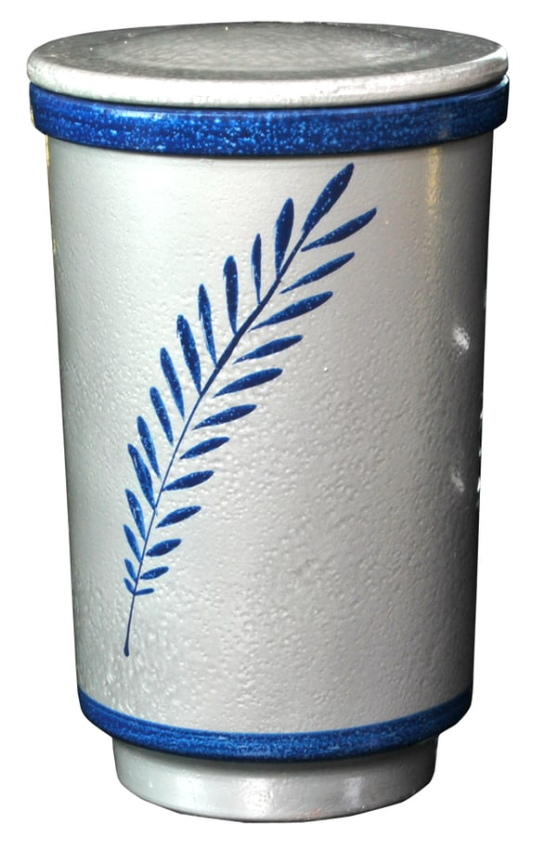

Ako već morate da birate, birajte najbolje!

Kremacija ili kremiranje je spaljivanje tela pokojnika usled izlaganja tela visokim temperaturama. Nakon procesa kremacije preostali posmrtni ostaci se prikupljaju u posude koje se nazivaju urne. Nakon toga se urne sahranjuju na grobljima ili se predaju rodbini u skladu sa zakonom i verskim običajima.
Pogrebno preduzeće Kod Isusa vam stoji na raspolaganju ukoliko ste se odlučili za ovakav vid sahranjivanja pokojnika. Proces kremacije započinje podnošenjem zahteva za kremaciju. Osobe koje mogu podneti ovaj zahtev su:
Ovaj zahtev neophodno je podneti u pisanoj formi. Uz njega se prilaže i overena izjava preminulog lica da se njegovi posmrtni ostaci kremiraju. Preostali posmrtni ostaci smeštaju se u urnu koja je izrađena od nekog trajnog materijala. Nakon izvršene kremacije urna sa pepelom može biti pohranjena na sledeća mesta:

|  |  |  | |||||||
| URNA NERO MARQUINA |
URNA ROSA FRANCIJA |
URNA CARRARA | URNA S-002 ROZE | URNA OLIV GRIN | URNA ONIKS S 002 | URNA 005 AFRIKAN RED |
URNA MERMER SIVA |
URNA KERAMIKA CRNA |
URNA KERAMIKA SIVA |